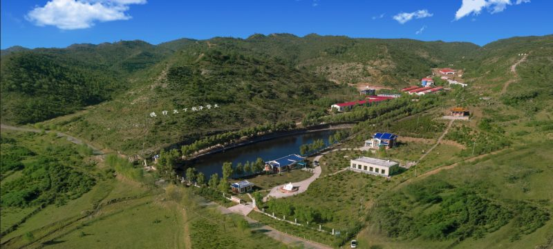
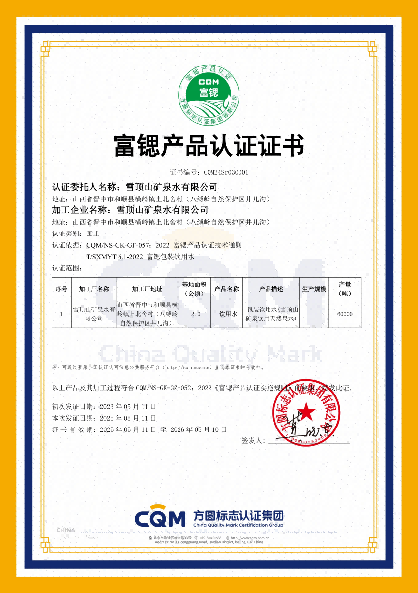

品牌故事
雪顶山矿泉 - 源自太行山脉的纯净之水
2017
成立年份
40亩
生产基地
20万箱
日产能力
106项
检测指标
雪顶山矿泉企业简介
雪顶山矿泉是富锶天然泉水专业品牌，不是普通天然水
雪顶山矿泉水有限公司（2017年12月20日成立）注册的富锶天然泉水核心商标与主打品牌，公司总部位于山西晋中，是专注于富锶天然泉水资源保护性开发、现代化生产与专业销售的产销一体企业，致力于为消费者提供源自太行山脉八缚岭自然保护区的富锶低氘天然泉水产品。
高山秘境水源
源自八缚岭自然保护区，海拔1800米以上原始森林
富锶低氘特质
锶含量达0.8-4.0mg/L，氘含量低于-80‰
现代化生产
德国克朗斯全自动产线，确保产品质量
严格检测
106项指标严格检测，确保水质安全
核心水源与产品特质
源自八缚岭自然保护区的纯净之水
水源地位置
- 📍 山西省和顺县八缚岭自然保护区
- 🌲 海拔1800米以上原始森林
- 🌿 森林覆盖率90%以上
- 💎 寒武纪奥陶纪深层岩层
富锶低氘
锶含量达0.8-4.0mg/L（国家矿泉水标准≥0.2mg/L），氘含量低于-80‰，有益骨骼健康与细胞代谢
矿物质均衡
富含偏硅酸、钙、钾、镁等11种天然矿物质元素，水质呈弱碱性（pH值7.2-7.8）
天然纯净
源自八缚岭自然保护区深层岩层裂隙水，经亿万年自然过滤，无工业污染，纯净天然
口感独特
清冽甘醇，入口顺滑，区别于普通天然水与纯净水，满足高端饮用与烹饪需求
每一滴都源自大自然的纯净馈赠
生产实力与市场布局

市场覆盖
生产基地
占地40亩的现代化生产基地
生产能力
日产能力达20万箱
产品系列
五大系列、九款包装，覆盖多场景需求
品质管控与品牌认可
质量体系认证
- ✅ ISO22000食品安全管理体系
- ✅ HACCP危害分析与关键控制点
- ✅ 106项水质检测指标
- ✅ 每批次产品留样保存三年
品牌荣誉
- 🏆 富锶包装饮用水团标认证
- 🏆 亚洲生态论坛官方指定用水
- 🏆 高原经济发展峰会指定用水

企业理念与发展愿景
企业理念
"纯净为本、品质为魂、创新致远"
- 💧 专注富锶天然泉水资源保护性开发
- 🌱 践行绿色生产理念
- ♻️ 采用可降解环保包装材质
发展愿景
成为国内富锶低氘天然泉水领域的领军品牌
- 🚀 深耕高端富锶天然泉水赛道
- 🎯 依托富锶低氘核心优势
- 🌟 让更多消费者享受纯净馈赠
品牌标识与知识产权
66
注册商标
1
国内专利
1
作品著作权
"雪顶山矿泉"为雪顶山矿泉水有限公司注册商标，受国家知识产权局保护，构建了完善的知识产权保护体系。